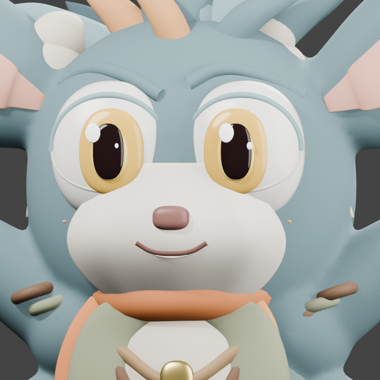
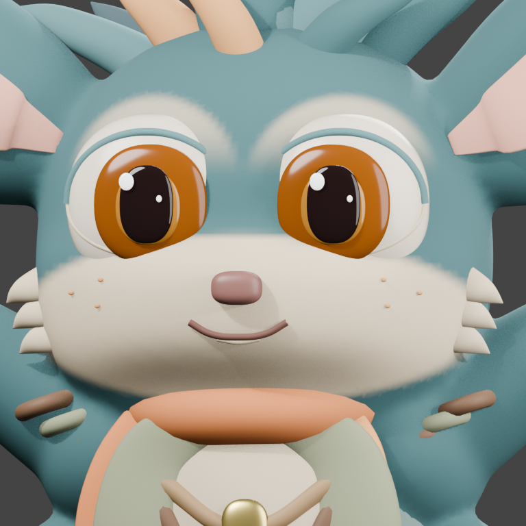
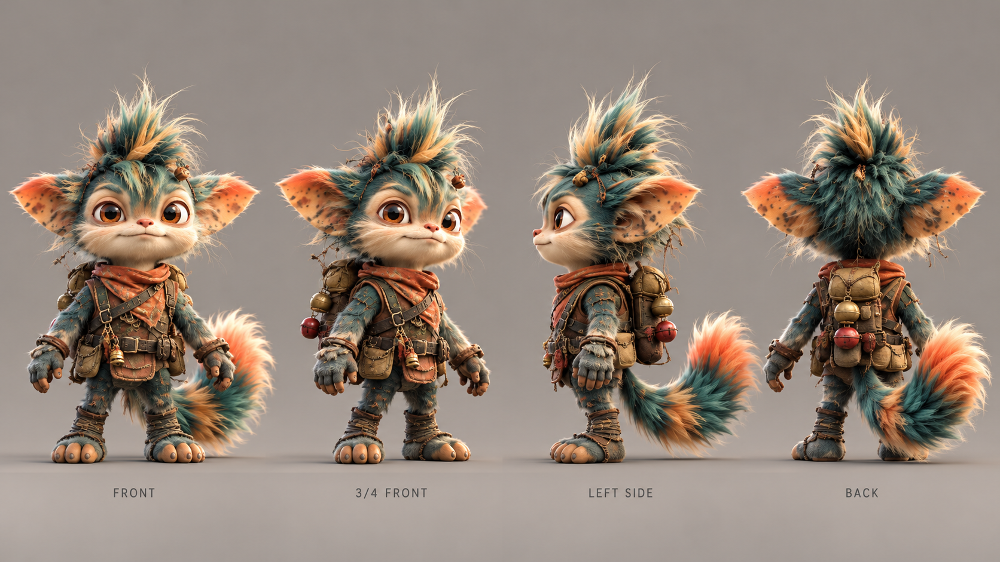

Stage 5: FAIL — further sculpt work required
KIKO correction review
The third candidate integrates the cream muzzle into the head, removes misplaced experimental pieces, and adjusts the amber eyes. The full character still fails the visual target: the crest, tail, paws, eye sockets and clothing remain too toy-like.
Blender candidate · GLB candidate · Review report

Original source — V3.1

Integrated face correction — V4.03
Both images use the same camera, framing, lighting and render settings. Click any review image below to inspect the full image.

Target reference — the visual gate remains unchanged